Quiénes Somos
Creado por Laura Vanessa Peña Cárdenas, Green Lens nace de la fusión entre la pasión por la fotografía y el compromiso con el medio ambiente. Nuestro propósito es transformar residuos e insumos reciclables en ambientaciones y escenarios fotográficos de alto impacto estético. Demostramos que la sostenibilidad y la alta dirección de arte van de la mano.
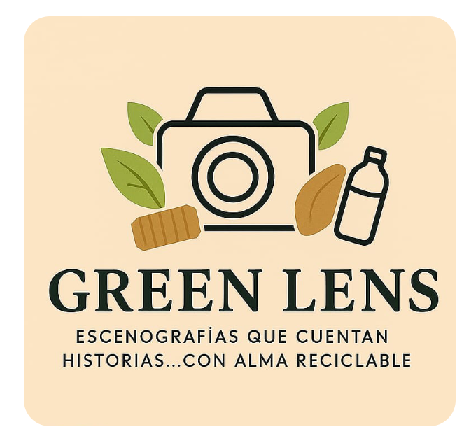
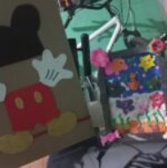
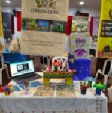
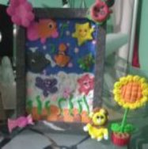
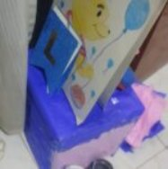
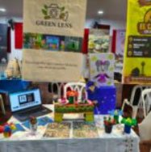
Cero residuos innecesarios en la producción.
Diseños a medida para marcas y personas.
Experiencia integrada desde la web hasta tus redes sociales.
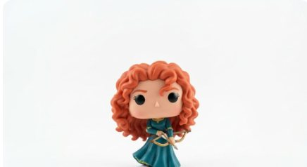
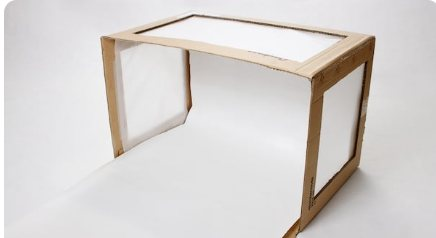
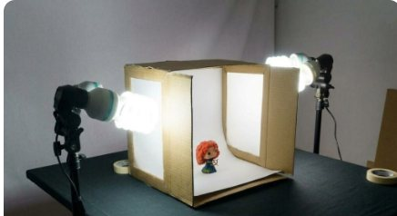
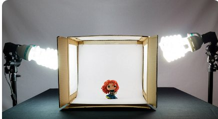
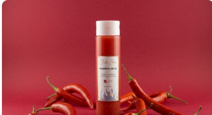
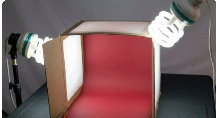
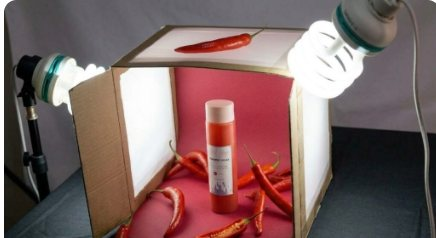
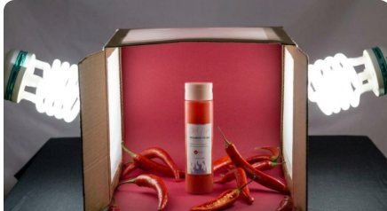
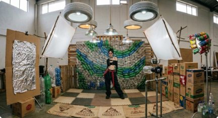
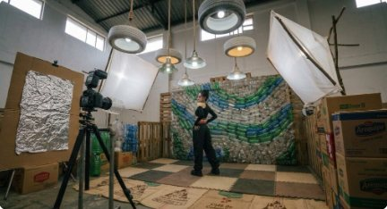
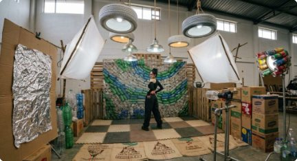
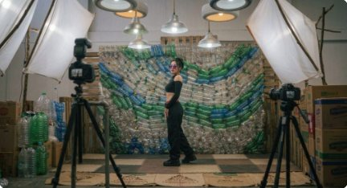
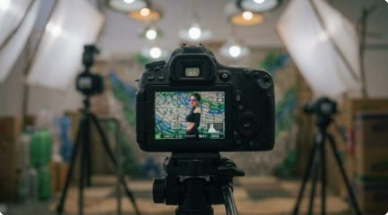
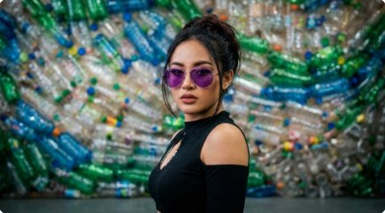
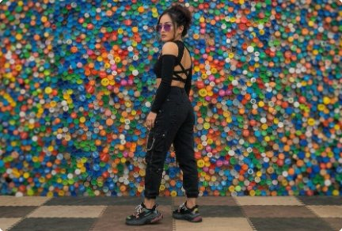
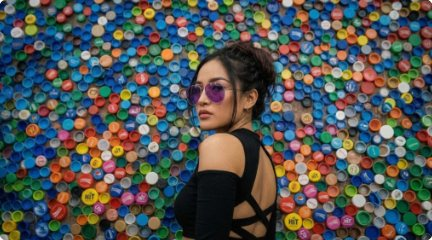
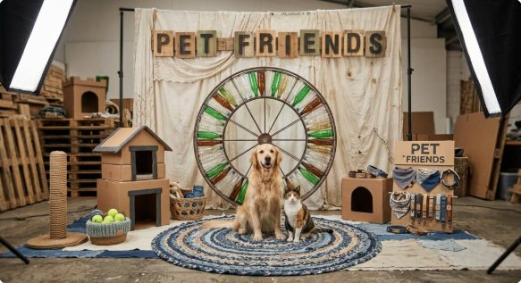
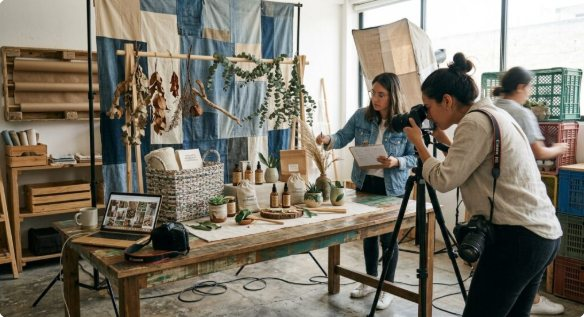
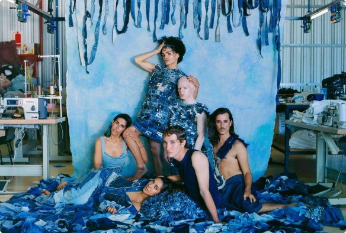
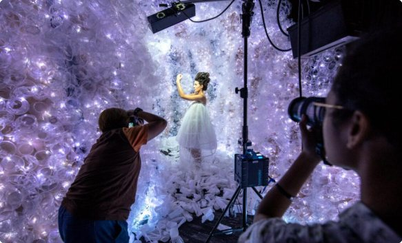